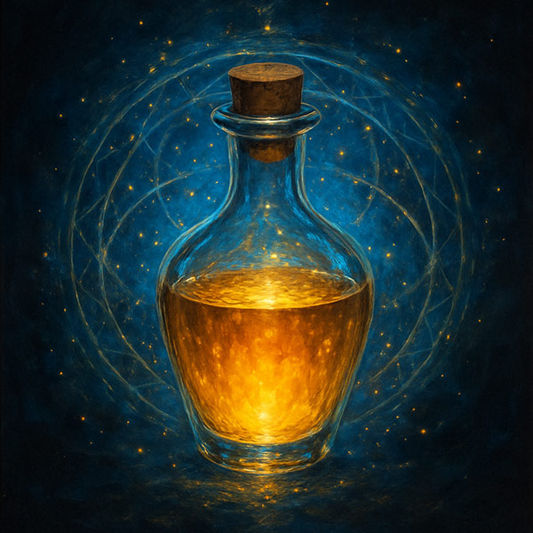
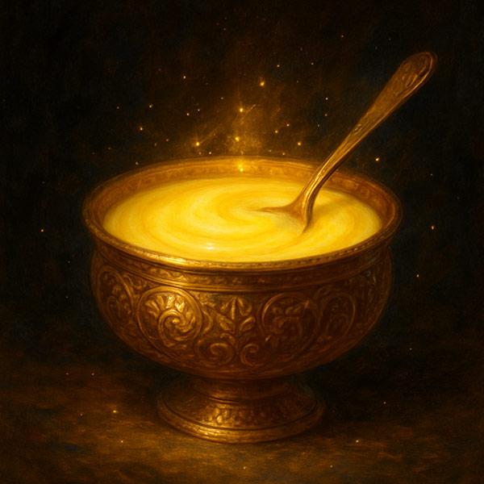

Cow Dung
Gomaya
"The Earth's First Medicine"
Free, abundant, and immediate — a shift in mood, lightness in the breath, and healing that follows almost as a secondary effect.
Read more →Imagine a being who produces, from her own body, substances each capable — the moment they meet your skin — of renewal, detoxification, joy, and spiritual awakening.
Fantasy? This being exists, and has lived alongside humanity since before recorded history. She is the cow — and what follows are three of her gifts.
Each remarkable enough to deserve its own name, and each working in its own particular way. None requires the others. Each can be used entirely on its own, and each can be combined for a more complete practice.
"The Earth's First Medicine"
Free, abundant, and immediate — a shift in mood, lightness in the breath, and healing that follows almost as a secondary effect.
Read more →
"The Elixir of Renewal"
More concentrated and active — rich in urea, minerals and growth factors, it rebuilds tissue and renews from within.
Read more →
"The Nourishing Carrier"
Milk refined by fire into amrita, the nectar of immortality — the best medium to carry healing deep into the tissues.
Read more →"What matters is not which one you start with — what matters is that you start. The cow does not ask for perfection. She asks only for contact."
Most people would say the cow's greatest gift is milk. And yet milk gives none of what this page describes — not the skin renewal, not the detoxification, not the mood lift that arrives the morning after your first application.
Not the spiritual clarity, the vivid dreams, the creative surge — nor the mastery of extraordinary supernatural powers and psychic abilities the Vedic tradition calls siddhis. For all of that, you must look at two substances most people have walked past every day of their lives.
The Vedic tradition noticed this five thousand years ago. Modern people are only beginning to rediscover it now.
You do not need to understand everything before you begin. You do not need an entirely new lifestyle. You do not need to use all three gifts at once.
Each gift can stand on its own. Each offers its own benefits. Each can become a doorway to a deeper understanding of what the cow has been quietly offering humanity all along.
The path does not require perfection.
It requires only curiosity.
The sacred blend of five precious substances from the cow — dung, urine, milk, curd, and ghee. United in one preparation, they form a complete, powerful formula bringing together every benefit in perfect harmony for deep healing, purification, and spiritual growth.
The journey that led me to the cow's gifts — from a moment of curiosity in an Indian ashram bathroom to fourteen years of psoriasis clearing in two weeks.
Read the full account →Questions, sharing, collaboration. Reach out for personal guidance, or to learn where to find cow products in the UK.
Get in touch →"The cow does not withhold her medicine. She never has. She simply waits for us to look in the right direction."